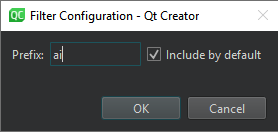

Locator
To set locator preferences, go to Preferences > Environment > Locator, or select  > Configure in the locator field.
> Configure in the locator field.

Changing Locator Filters
You can change the preset locator filters to match your use case. For example, change the filter prefix and restrict the search to items that match the filter.
To configure a locator filter:
- Go to Preferences > Environment > Locator.
- Select a filter, and then select Edit.
- Specify the prefix string.

- To implicitly include the filter even when not typing a prefix as a part of the search string, select Include by default.
Adding Web Search Engines
By default, the Web Search (r) locator filter includes the URLs and search commands for Bing, Google, Yahoo! Search, cplusplus.com, and Wikipedia.
To find out the format of the search command to use for your favorite web search engine, perform a search in your browser and copy the resulting URL to the locator filter configuration. Replace the search term with the variable %1.
To add URLs and search commands to the list:
- Go to Preferences > Environment > Locator.
- Select Web Search > Edit.
- Select Add to add a URL filter to the list.

- Double-click the new entry to specify a URL and a search command. For example,
http://www.google.com/search?q=%1. - Click OK.
To add a new separate web search locator filter instead of updating the default filter, select Add > URL Template.
Creating Locator Filters
To quickly access files not directly mentioned in your project, create your own directory filters. That way you can locate files in a directory structure you have defined.
To create custom locator filters:
- Go to Preferences > Environment > Locator.
- Select Add > Files in Directories to add a directory filter.
- In Name, enter a name for your filter.
- Select Add to add directories to Directories. The locator searches directories recursively.
- In File pattern, specify file patterns to restrict the search to files that match the pattern. Separate the patterns with commas. For example, to search for all
.qmland.ui.qmlfiles, enter*.qml,*.ui.qml - In Exclusion pattern, specify file patterns to omit files from the search.
- In Prefix, specify the prefix string.
To implicitly include the filter even when not typing a prefix as a part of the search string, select Include by default.
- Select OK.
Configuring Locator Cache
The locator searches the files matching your file pattern in the directories you have selected and caches that information. Qt Creator updates the cache for all preset filters as you write code. By default, Qt Creator updates your custom filters once an hour.
To update the cached information manually, select > Refresh in the locator.
To set a new cache update time:
- Go to Preferences > Environment > Locator.
- In Refresh interval, set a new time in minutes.
See also Navigate with locator, How To: Search, Perform calculations, and Locator.